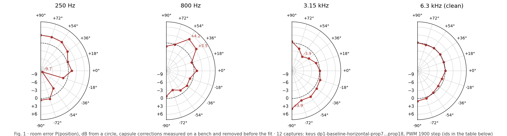
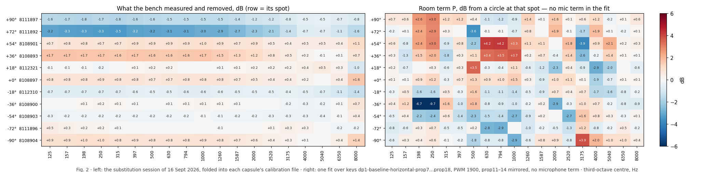

SoundVisualizer · arc validation · what the chamber does to the polar
For these runs the arc was laid flat (horizontal), with the propeller axis vertical. All microphones then sit at the same height, in the propeller plane, around the propeller. A perfect setup reads the same level at every position: a circle. We did this twelve times (keys prop7–18, 1–2 Sept 2026, PWM 1900). What is left after we remove each microphone's own offset is the effect of the room.

The microphones. Because the microphones at +72° and +54° were swapped after prop10, and the arc was turned around for prop11–14, the fit can tell a bad microphone from a bad spot. Ten microphones agree within ±1.8 dB in every band (left panel of Fig. 2). The one exception is 811-1892, which reads 2–6 dB too low from 125 Hz to 2.5 kHz: its calibration file does not match the capsule. When it sat at +54° it made the room error look like 7 dB. Take it off the arc or measure it again. With it removed, the right panel does not change shape.
A labelling error. prop11–14 were measured with the arc turned around. Their patterns match the mirror image of the other runs (correlation +0.79 to +0.98). Plotted by label the dip appears on the other side; plotted by physical position they agree with the other eight runs. Turning the arc moves the labels, not the blue and red patches.
The propeller. With the arc flat and the axis vertical every microphone sees the propeller from the same angle, so the propeller cannot make one spot differ from another. Whatever is not white in Fig. 2 comes from outside the propeller.

Three suspects, one per band in Fig. 2. Each is a size and a place, read off the map: a surface shows up once the wavelength is shorter than it (Rajmane and Baumann, DAGA 2016: a 35 cm plate from 1.25 kHz, a 10 cm plate from 3.15 kHz).
Every level in the twelve runs (11 microphones × 19 third-octave bands × 12 runs) is written as three parts added together: run gain + position error + microphone offset. The three parts are found by least squares, i.e. the single set of values that fits all 12 × 11 levels best in every band. Run gain takes up any level difference between runs (RPM, day, load). Microphone offset takes up each serial's own error after calibration. Position error is what is left that belongs to a spot on the arc; it is forced to average zero over the eleven spots, so it reads as dB from a circle. That is what Figs. 1 and 2 show.
The turned-around runs are handled before the fit: for prop11–14 the label +e is entered as physical −e, so "−72°" always means the same spot in the room. The four microphone offsets and the eleven position errors can be told apart only because the same spot was covered by different microphones (the swap after prop10 and the four turned runs). Without that, a low microphone and a low spot would be indistinguishable. Spectra: Welch 4096-point Hann, UMIK-2 calibration as the app applies it, third-octave sums 125 Hz–8 kHz. Data: the last PWM-1900 capture in each key 2004__6in__unset__dp1-baseline-horizontal-prop7…prop18, 11 mics × 2.0 s; prop11–14 were measured with the arc turned around; prop1–6 and the 31 Aug keys are left out because they match neither orientation. Capture ids per key: docs/analysis/arc-validation-data.json. Code: scripts/arc_error_map.py, function fit.
Refitting from the data pack reproduces the published maps to 0.01 dB; each map sums to zero per band by construction. 132 measured cells per band are explained by 34 unknowns. 87% of all cells are within 2 dB of gain + P + M. Scatter is 0.6–0.8 dB in the quiet bands and 1.5–2.3 dB in 200–250 Hz and 500–1000 Hz, the bands where the room acts. The worst cells (+11 dB at −36°/250 Hz in prop7; +6 to +7 dB at 0°/2–4 kHz in prop7–8) are single tone-band cells in the first two runs where the blade tone sits on a band edge; they do not follow a microphone or a spot and move the maps by under 1 dB. Limit: the 0° microphone (810-8897) never moved, so its M and the 0° P are known only as a sum.
| run | mic there | measured | gain | P | M | model | left |
|---|---|---|---|---|---|---|---|
| prop18 | 811-1896 | 59.1 | 62.3 | −4.6 | +2.5 | 60.2 | −1.1 |
| prop12 (180°) | 810-8901 | 58.6 | 62.2 | −4.6 | +1.4 | 59.0 | −0.4 |
| +54° at 800 Hz: prop8 with 810-8901 reads +5.6 re gain = P +4.7 + M +1.4; prop18 with 811-1892 reads +3.1 = +4.7 − 4.2. Two mics, one room value. | |||||||